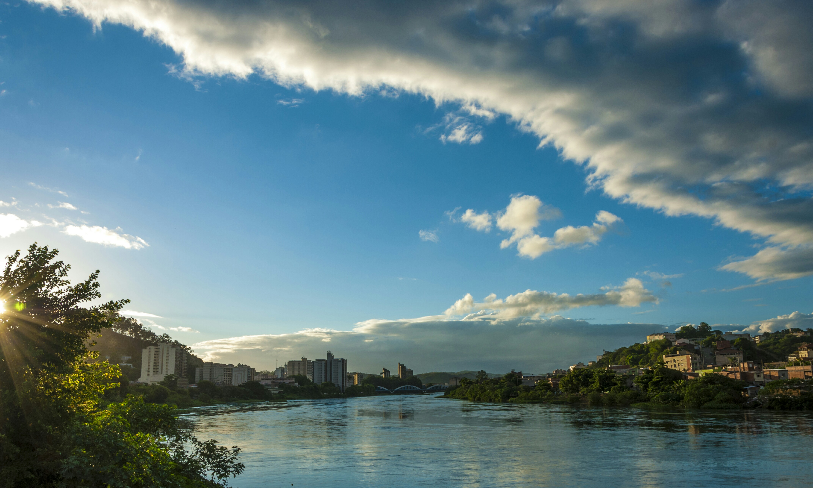

Diez muertos, entre ellos cinco niños, tras caer un automóvil a un lago en Barra Mansa, Brasil
El accidente ocurrió la noche del 7 de noviembre en el estado de Río de Janeiro; la Policía Civil investiga las causas y unos 30 bomberos participaron en el operativo.

Qué pasó
Diez personas murieron la noche del sábado 7 de noviembre de 2026 después de que un vehículo volcara y cayera a un lago en la zona de Barra Mansa, en el estado brasileño de Río de Janeiro. Según el gobierno estatal y los bomberos, las víctimas eran cinco adultos y cinco niños, encontrados sin vida dentro del automóvil. Unos 30 bomberos de cinco unidades participaron en la operación con diez vehículos, una embarcación y dos buzos. La investigación está a cargo de la 90.ª Comisaría de la Policía Civil de Barra Mansa. El lugar fue sometido a peritaje, se incautaron documentos del vehículo y los cuerpos fueron trasladados al Instituto Médico Legal de Volta Redonda. Las autoridades todavía no han determinado las causas del vuelco ni de la caída al agua. Los primeros informes divergían sobre el número de niños, pero los bomberos confirmaron cinco niños y cinco adultos el domingo 8 de noviembre.
Análisis del Cuervo
La tragedia pone de relieve la necesidad de reconstruir mediante peritajes la trayectoria del vehículo, las condiciones de la carretera y la secuencia de los hechos antes de atribuir responsabilidades. La caída al lago requiere también un análisis técnico del vuelco y de las circunstancias de las muertes. La información oficial disponible no confirma exceso de velocidad, fallas mecánicas, consumo de alcohol ni ninguna otra causa específica. La participación de buzos y unidades de distintas localidades muestra la complejidad de una operación de rescate en el agua.
Contrapunto
Los reportes utilizan distintas referencias geográficas, incluida la zona de Quatis y carreteras cercanas a Barra Mansa; la ubicación precisa y la dinámica del accidente deben ser establecidas por los investigadores. La Policía Civil aún no ha divulgado una conclusión pericial, por lo que no se puede afirmar que hubo imprudencia, defectos de la vía u otras circunstancias. La identificación de las víctimas y los datos familiares deben respetar la información oficialmente confirmada y la privacidad de los afectados.